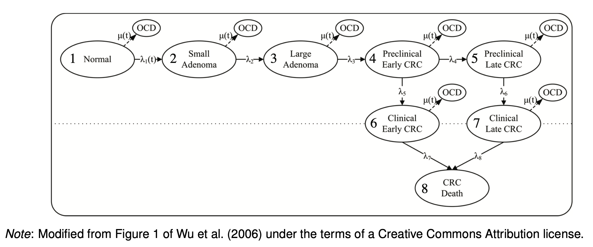

taiwan_mortality = # a text file that is loaded by the longevity programs to provide the
# age-specific mortality rates for Taiwan. The values are mortality
# probabilities (q_x) for age classes 1 to 110, for the year 2000,
# both sexes combined. Data obtained from the Human Mortality Database.
read.delim(here("blog/drafts/modeling-dalys/data/demographic-research.45-13/taiwan_mortality.txt"), header = FALSE, col.names = c(""))
df_Ux <-
R.matlab::readMat(here("blog/drafts/modeling-dalys/data/demographic-research.45-13/CRCmatrices.mat"))
params <-
list(
t_names = c("natural_history"),
n_treatments = 1,
s_names = c("Normal","SmallAdenoma","LargeAdenoma","PreClinEarlyCRC","PreClinLateCRC","EarlyCRC","LateCRC","CRCDeath","OthDeath"),
transient_states = c("Normal","SmallAdenoma","LargeAdenoma","PreClinEarlyCRC","PreClinLateCRC","EarlyCRC","LateCRC"),
absorbing_states = c("CRCDeath","OthDeath"),
n_cohort = 1,
Delta_t = 1,
omega = 50, # time horizon
initial_age = 50,
#other rates (age independent), from Wu et al (2016)
lambda = c(3.46e-2, 2.15e-2, 3.697e-1, 2.382e-1, 4.852e-1, 3.02e-2, 2.099e-1),
# lambda_1 = transition rate from normal cells to small adenoma (age dependent)
lambda_t = c(50, 55, 60, 65, 70),
lambda_1_ = c(0.00836, 0.00990, 0.01156, 0.01333, 0.01521), #from Wu et al
oDr = 0, # health (annual) discount rate
cDr = 0, # cost (annual) discount rate
gbd_synthetic_life_table =
tibble::tribble(
~age, ~life_expectancy,
0L, 88.8718951,
1L, 88.00051053,
5L, 84.03008056,
10L, 79.04633476,
15L, 74.0665492,
20L, 69.10756792,
25L, 64.14930031,
30L, 59.1962771,
35L, 54.25261364,
40L, 49.31739311,
45L, 44.43332057,
50L, 39.63473787,
55L, 34.91488095,
60L, 30.25343822,
65L, 25.68089534,
70L, 21.28820012,
75L, 17.10351469,
80L, 13.23872477,
85L, 9.990181244,
90L, 7.617724915,
95L, 5.922359078
)
)
params =
modifyList(params, with(params, {
list(
n_cycles = omega / Delta_t ,
oDr = ((1 + oDr)^(Delta_t) - 1),
cDr = ((1 + cDr)^(Delta_t) - 1),
lambda_1 = Hmisc::approxExtrap(lambda_t, lambda_1_, xout = initial_age:(initial_age+(omega / Delta_t)-1), method = "linear")$y,
omega = omega / Delta_t,
tau = length(transient_states), # Number of transient (living) health stages (τ)
alpha = length(absorbing_states), # Number of absorbing (dead or otherwise removed) stages (α)
n_states = length(s_names), # Total number of states
stot = length(transient_states) * (omega / Delta_t),
mu = taiwan_mortality[initial_age:(initial_age+omega),], # background mortality starting at age 50
stot = length(transient_states) * (omega / Delta_t) # total number of states (tau*omega)
)
}))Colorectal Cancer Model
Original Model

### Markov Rate Matrix
mR_markov <- function(t, params) {
with(params,{
lapply(t, function(tt) {
# Current cycle
current_age = initial_age + Delta_t * tt; current_age
year = tt * Delta_t; year
# Background mortality rate
lambda_1_ <- lambda_1[tt]; lambda_1_
r_death = mu[tt]; r_death
# CRC Death rate
r_death_crc = lambda[7]; r_death_crc
# Initial rate matrix
mR_ =
array(data = c(
# Natural History
0, 0, 0, 0, 0, 0, 0, 0, 0, # To normal
lambda_1_, 0, 0, 0, 0, 0, 0, 0, 0, # To Small Adenoma
0, lambda[1], 0, 0, 0, 0, 0, 0, 0, # To Large Adenoma
0, 0, lambda[2], 0, 0, 0, 0, 0, 0, # To Preclinical Early CRC
0, 0, 0, lambda[3], 0, 0, 0, 0, 0, # To Preclinical Late CRC
0, 0, 0, lambda[4],0 , 0, 0, 0, 0, # To Clincal Early CRC
0, 0, 0, 0, lambda[5], 0, 0, 0, 0, # To Late CRC
0, 0, 0, 0, 0, lambda[6], lambda[7],0, 0 , # To CRC Death
r_death, r_death, r_death, r_death, r_death, r_death, r_death, 0, 0 # To Background Mortality
),
dim = c(n_states, n_states, n_treatments),
dimnames = list(from = s_names,
to = s_names,
t_names))
# Balance matrix
mR <- apply(mR_,3,simplify = FALSE, function(x) {
diag(x) = rep(0, nrow(x))
diag(x) = -rowSums(x)
x
})
# Return matrix
mR
})
})
}# Markov Rate Matrix
mR =
mR_markov(1:params$n_cycles, params)
Q_ = mR %>% map(~(lapply(.x,function(x) t(x)))) %>%
transpose()
P_ = mR %>% map(~(lapply(.x, function(x) expm(t(x))))) %>%
transpose()
M_ = P_ %>% map(~(lapply(.x, function(x) x[ as.vector(params$absorbing_states),-which(rownames(x) %in% params$absorbing_states)] %>% as.matrix())))
U_ = P_ %>% map(~(lapply(.x, function(x) x[ as.vector(params$transient_states), as.vector(params$transient_states)] %>% as.matrix())))
# Create subdiagonal age transition matrix
D_ <- matrix(0, params$n_cycles, params$n_cycles)
vec_ <- rep(1, params$n_cycles-1)
D_[row(D_) == col(D_) + 1] <- vec_
# Block diagonal age transition matrix
bbD_ <- kronecker(diag(params$tau), D_)
# Block diagonal transient matrix
bbU_ <- U_ %>% map(~(bdiag(.x)))
K_ <- vecperm(params$tau, params$omega)
#range(K_ - df_Ux$K) # Check against original
# The age-stage multistate transient matrix
Utilde_ <- bbU_ %>% map(~(t(K_) %*% bbD_ %*% K_ %*% .x))
# Age-stage multistate mortality matrix (alpha x tau*omega)
Mtilde_ <- M_ %>% map(~(do.call(cbind, .x)))
#range(Mtilde_$natural_history - df_Ux$Mtilde)
# Age-stage multistate Markov chain transition matrix
#dim(df_Ux$Ptilde)
Ptilde_ <-
map2(Utilde_, Mtilde_,~({
with(params,{
rbind(cbind(.x,matrix(0, tau * omega, alpha)) ,
cbind(.y,diag(alpha)))
})
}))
#range(Ptilde - df_Ux$Ptilde)
# Fundamental matrix of the multistate Markov chain
Ntilde_ <- Utilde_ %>% map(~(solve(diag(params$stot) - .x)))##################
# Reward Matrices
##################
# life years lost
# YEARS OF LIFE LOST DUE TO COLORECTAL CANCER
# calculating life lost due to transitions into death due to CRC
Ntilde = as.matrix(Ntilde_[[1]])
Ptilde = as.matrix(Ptilde_[[1]])
Utilde = as.matrix(Utilde_[[1]])
yll_reward_matrix <- function(Ntilde,params) {
with(params,{
# moments of remaining longevity
eta1 <- apply(Ntilde,2,sum)
eta2 <- t(eta1) %*% (2 * Ntilde - diag(tau * omega))
eta3 <- t(eta1) %*% (6 * Ntilde%^%2 - 6 * Ntilde + diag(tau * omega))
eta4 <- t(eta1) %*% (24 * Ntilde%^%3 + 36 * Ntilde%^%2 + 14 * Ntilde - diag(tau * omega))
# reward matrices based on transition to stage 8 (CRC deaths)
Btilde <- matrix(0, nrow = tau * omega, ncol = tau * omega)
Ctilde <- matrix(0, nrow = alpha, ncol = tau * omega)
Ctilde[1, ] <- eta1
R1 <- rbind(cbind(Btilde, matrix(0, nrow = tau * omega, ncol = alpha)),
cbind(Ctilde, matrix(0, nrow = alpha, ncol = alpha)))
Ctilde[1, ] <- eta2
R2 <- rbind(cbind(Btilde, matrix(0, nrow = tau * omega, ncol = alpha)),
cbind(Ctilde, matrix(0, nrow = alpha, ncol = alpha)))
Ctilde[1, ] <- eta3
R3 <- rbind(cbind(Btilde, matrix(0, nrow = tau * omega, ncol = alpha)),
cbind(Ctilde, matrix(0, nrow = alpha, ncol = alpha)))
Ctilde[1, ] <- eta4
R4 <- rbind(cbind(Btilde, matrix(0, nrow = tau * omega, ncol = alpha)),
cbind(Ctilde, matrix(0, nrow = alpha, ncol = alpha)))
# call rewards function
out_YLL <- list(Ptilde = Ptilde, Utilde = Utilde, R1 = R1, R2 = R2, R3 = R3, R4 = R4)
out_YLL
})
}
mYLL <- yll_reward_matrix(as.matrix(Ntilde),params)
P = mYLL$Ptilde
U = mYLL$Utilde
R1 = mYLL$R1
R2 = mYLL$R2
R3 = mYLL$R3
R4 = mYLL$R4
# inputs
# P = markov chain transition matrix
# U = markov chain transient matrix
# R1, R2, R3, R4 = matrices of first four moments (about the origin)
# of rewards associated with each transition
#
# output is a list with moments, statistics, and other useful
# information
# sizes of matrices
# tau = number of transient states
# alpha = number of absorbing states
# s = total number of states
s <- dim(P)[1]
tau <- dim(U)[1]
alpha <- s - tau
# vector of ones
e <- rep(1, s)
# matrix Z to remove absorbing states
Z <- cbind(diag(tau), matrix(0, nrow = tau, ncol = alpha))
# identity matrix
Itau <- diag(tau)
# fundamental matrix
N <- solve(Itau - U)
# vectors of moments of lifetime rewards
# rho1 = N'*(Z*(((P.*R1).')*e));
rho1 = t(N) %*% Z %*% (t(P * R1)) %*% e
# statistics calculated from the moment vectors
# # variance and standard deviation
# var <- rho2 - rho1^2
# std <- sqrt(var)
#
# # coefficient of variation
# # use pseudoinverse to avoid division by zero
# cv <- solve(diag(rho1)) %*% std
#
# # skewness
# # use the pseudo-inverse
# skew <- (solve(diag(var))^(3/2)) %*% (rho3 - 3 * rho2 * rho1 + 2 * (rho1^3))
#
# # kurtosis
# # kurt=(-3*rho1.^4 + 6*rho2.*rho1.^2 - 4*rho1.*rho3 + rho4)./(var.^2) - 3;
#